My Text Analysis Skills on Display
On July 13, 2015, the musical Hamilton, written by Lin-Manuel Miranda, premiered at the Richard Rogers Theater on Broadway. It received critical acclaim and the musical was nominated 16 times for Tony award categories and won in 11 categories. The musical was also awarded the 2016 Pulitzer Prize for Drama. It instantly became a smashing hit, with people all around the globe not only listening to the music, but striving to see it in person.
The musical tells the story of the Founding Father Alexander Hamilton, with the music heavy on hip-hop, R&B, rap, and soul. It is split into two acts that explore his life before becoming a major political figure and after. The musical encounters other important historical characters, such as George Washington, Thomas Jefferson, and Aaron Burr.
Here is the original broadway cast:
This code will provide a text analysis on the lyrics of each song between the two acts. Word counts will be assessed, the top 5 most frequently used words per song will be graphed. Additionally, two word clouds will be generated based on the most frequent 100 words in each act. Finally, a sentiment analysis will be ran, comparing the attitudes and opinions expressed throughout each song between the two acts.
## read in lyrics for act 1 and 2
ham_act1 <- pdf_text(here("data", "hamilton_act1.pdf")) # read in act 1 lyrics
ham_act2 <- pdf_text(here("data", "hamilton_act2.pdf")) # read in act 2 lyrics
## convert text to a data frame
act1_lines <- data.frame(ham_act1) %>% # create a data frame using act 1 lyrics
mutate(page = 1:n()) %>% # define all pages in the text
mutate(text_act1 = str_split(ham_act1, pattern = "\\n")) %>% # create a new row
# with every new line
unnest(text_act1) %>%
mutate(text_act1 = str_trim(text_act1))
act2_lines <- data.frame(ham_act2) %>% # create a data frame using act 2 lyrics
mutate(page = 1:n()) %>% # define all pages in the text
mutate(text_act2 = str_split(ham_act2, pattern = "\\n")) %>% # create a new row
# with every new line
unnest(text_act2) %>%
mutate(text_act2 = str_trim(text_act2))
## do some tidying
tunes_act1 <- act1_lines %>% # create a tunes data frame
mutate(song = ifelse(str_detect(text_act1, "Song"), text_act1, NA)) %>% # create a song column
fill(song, .direction = "down") %>% # fill down to create rows
separate(col = song, into = c("so", "no"), sep = " ") %>% # create new columns with song
# in one and number in the other
mutate(song = as.numeric(as.roman(no))) # number column as roman numeral
tunes_act2 <- act2_lines %>% # create a tunes data frame
mutate(song = ifelse(str_detect(text_act2, "Song"), text_act2, NA)) %>% # create a song column
fill(song, .direction = "down") %>% # fill down to create rows
separate(col = song, into = c("so", "no"), sep = " ") %>% # create new columns with song
# in one and number in the other
mutate(song = as.numeric(as.roman(no))) # number column as roman numeral
# unnest the words in each column of the act 1 text
words_act1 <- tunes_act1 %>%
unnest_tokens(word, text_act1) %>%
select(-ham_act1)
# unnest the words in each column of the act 2 text
words_act2 <- tunes_act2 %>%
unnest_tokens(word, text_act2) %>%
select(-ham_act2)
# find word count of act 1 separated by song
act1_wordcount <- words_act1 %>%
count(song, word)
# find word count of act 2 separated by song
act2_wordcount <- words_act2 %>%
count(song, word)
# Remove stop words in act 1
words_act1_clean <- words_act1 %>%
anti_join(stop_words, by = "word") %>%
mutate(song_name = case_when( # rename songs in act 1
song == "1" ~ "Alexander Hamilton",
song == "2" ~ "Aaron Burr, Sir",
song == "3" ~ "My Shot",
song == "4" ~ "The Story of Tonight",
song == "5" ~ "The Schuyler Sisters",
song == "6" ~ "Farmer Refuted",
song == "7" ~ "You'll Be Back",
song == "8" ~ "Right Hand Man",
song == "9" ~ "A Winter's Ball",
song == "10" ~ "Helpless",
song == "11" ~ "Satisfied",
song == "12" ~ "The Story of \nTonight (Reprise)",
song == "13" ~ "Wait for It",
song == "14" ~ "Stay Alive",
song == "15" ~ "Ten Duel Commandments",
song == "16" ~ "Meet Me Inside",
song == "17" ~ "That Would Be Enough",
song == "18" ~ "Guns and Ships",
song == "19" ~ "History Has Its Eyes on You",
song == "20" ~ "Yorktown (The World \nTurned Upside Down)",
song == "21" ~ "What Comes Next?",
song == "22" ~ "Dear Theodosia",
song == "23" ~ "Non-Stop"
))
# remove stop words in act 2
words_act2_clean <- words_act2 %>%
anti_join(stop_words, by = "word") %>%
mutate(song_name = case_when( # rename songs in act 2
song == "1" ~ "What'd I Miss",
song == "2" ~ "Cabinet Battle #1",
song == "3" ~ "Take a Break",
song == "4" ~ "Say No to This",
song == "5" ~ "The Room Where It Happens",
song == "6" ~ "Schuyler Defeated",
song == "7" ~ "Cabinet Battle #2",
song == "8" ~ "Washington on Your Side",
song == "9" ~ "One Last Time",
song == "10" ~ "I Know Him",
song == "11" ~ "The Adams Administration",
song == "12" ~ "We Know",
song == "13" ~ "Hurricane",
song == "14" ~ "The Reynolds Pamphlet",
song == "15" ~ "Burn",
song == "16" ~ "Blow Us All Away",
song == "17" ~ "Stay Alive - Reprise",
song == "18" ~ "It's Quiet Uptown",
song == "19" ~ "The Election of 1800",
song == "20" ~ "Your Obedient Servant",
song == "21" ~ "Best of Wives and \nBest of Women",
song == "22" ~ "The World Was Wide Enough",
song == "23" ~ "Who Lives, Who Dies, \nWho Tells Your Story"
))
# find word counts without stop words in act 1
act1_nonstop_counts <- words_act1_clean %>%
count(song, song_name, word)
# find word counts without stop words in act 2
act2_nonstop_counts <- words_act2_clean %>%
count(song, song_name, word)
# top 5 words in act 1
act1_top5_words <- act1_nonstop_counts %>%
group_by(song) %>%
arrange(-n) %>% # arrange by decreasing number
slice(1:5) %>% # choose top 5 words in each song
ungroup() # stop grouping by song
# top 5 words in act 2
act2_top5_words <- act2_nonstop_counts %>%
group_by(song) %>%
arrange(-n) %>% # arrange by decreasing number
slice(1:5) %>% # choose top 5 words in each song
ungroup() # stop grouping by song
# graph the top 5 words in song 1-6
act1_1_6 <- act1_top5_words %>%
filter(song %in% c("1", "2", "3", "4", "5", "6")) # filter for songs 1-6
ggplot(data = act1_1_6, # specify data
aes(x = n, y = fct_reorder(word, n))) + # define parameters
geom_col(fill = "#f6c049", color = "#a8a7a7") + # define column graph and change colors
facet_wrap(~song_name, scales = "free") + #separate by song
labs(title = "Top 5 Words in Songs 1-6 in Hamilton: Act 1", # add title
x = "Count", # add x-axis label
y = "Word") + # add y-axis label
theme(plot.title = element_text(hjust = 0.5), # center title
panel.background = element_rect(color = "#404040"), # outline panel
plot.background = element_rect(fill = "snow")) # color plot background
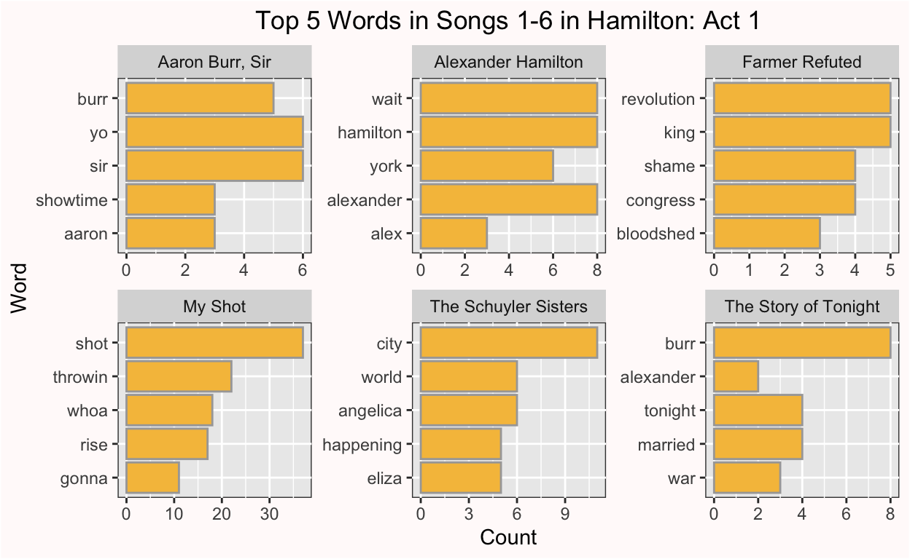
Figure 1. Top 5 Words in Songs 1-6 in Hamilton: Act 1. Between these 6 songs, the most frequently used word (“shot”) was counted 37 times in the song My Shot, featuring Hamilton, Laurens, Lafayette, Mulligan, Burr, and Company.
act1_7_12 <- act1_top5_words %>%
filter(song %in% c("7", "8", "9", "10", "11", "12")) # filter for songs 7-12
ggplot(data = act1_7_12, # specify data
aes(x = n, y = word)) + # define parameters
geom_col(fill = "#f6c049", color = "#a8a7a7") + # define column graph and change colors
facet_wrap(~song_name, scales = "free") + # separate by song
labs(title = "Top 5 Words in Songs 7-12 in Hamilton: Act 1", # add title
x = "Count", # add x-axis label
y = "Word") + # add y-axis label
theme(plot.title = element_text(hjust = 0.5), # center title
panel.background = element_rect(color = "#404040"), # outline panel
plot.background = element_rect(fill = "snow")) # change plot color
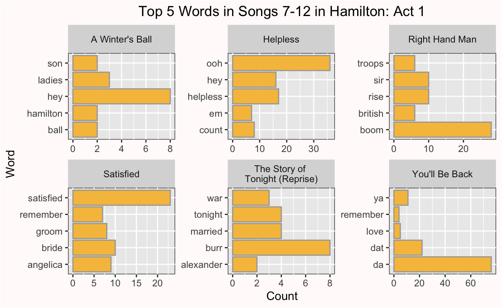
Figure 2. Top 5 Words in Songs 7-12 in Hamilton: Act 1. Between these 6 songs, the most frequently used word (“da”) was counted 76 times in the song You’ll Be Back, featuring King George III and Company.
act1_13_18 <- act1_top5_words %>%
filter(song %in% c("13", "14", "15", "16", "17", "18")) # filter for songs 13-18
ggplot(data = act1_13_18, # specify data
aes(x = n, y = word)) + # define parameters
geom_col(fill = "#f6c049", color = "#a8a7a7") + # define column graph and change colors + # hide legend
facet_wrap(~song_name, scales = "free") + # separate by song
labs(title = "Top 5 Words in Songs 13-18 in Hamilton: Act 1", # add title
x = "Count", # add x-axis label
y = "Word") + # add y-axis label
theme(plot.title = element_text(hjust = 0.5), # center title
panel.background = element_rect(color = "#404040"), # outline panel
plot.background = element_rect(fill = "snow")) # change background color
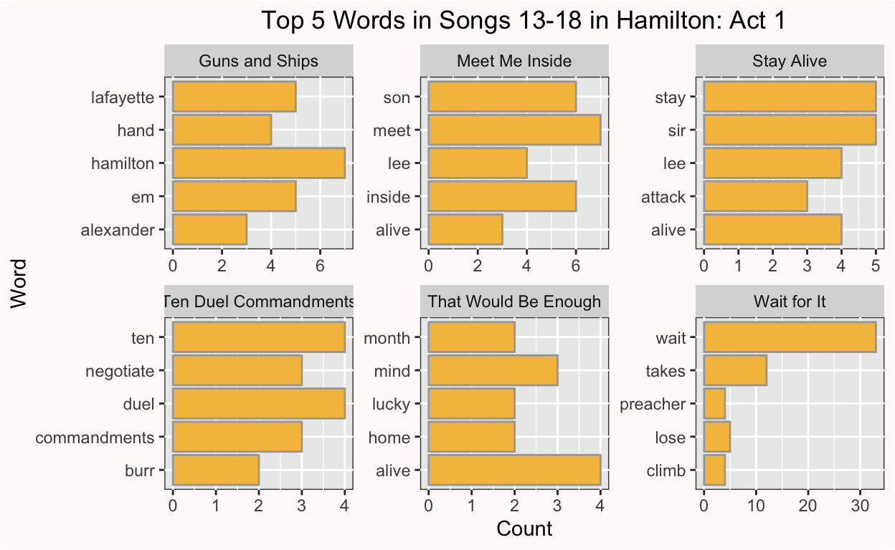
Figure 3. Top 5 Words in Songs 13-18 in Hamilton: Act 1. Between these 6 songs, the most frequently used word (“wait”) was counted 33 times in the song Wait For It, featuring Aaron Burr and Company.
act1_19_23 <- act1_top5_words %>%
filter(song %in% c("19", "20", "21", "22", "23")) # filter for songs 19-23
ggplot(data = act1_19_23, # specify data
aes(x = n, y = word)) + # define parameters
geom_col(fill = "#f6c049", color = "#a8a7a7") + # define column graph and change colors + # hide legend
facet_wrap(~song_name, scales = "free") + # separate by song
labs(title = "Top 5 Words in Songs 19-23 in Hamilton: Act 1", # add title
x = "Count", # add x-axis label
y = "Word") + # add y-axis label
theme(plot.title = element_text(hjust = 0.5), # center title
panel.background = element_rect(color = "#404040"), # outline panel
plot.background = element_rect(fill = "snow")) # change plot color
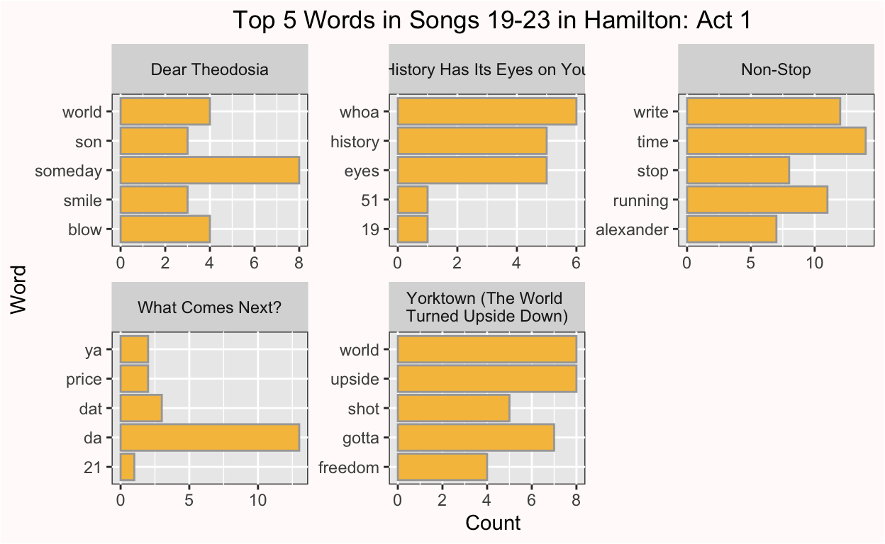
Figure 4. Top 5 Words in Songs 19-23 in Hamilton: Act 1. Between these 5 songs, the most frequently used word (“time”) was counted 14 times in the song Non-Stop, featuring Burr, Hamilton, Angelica, Eliza, Washington, and Company.
act2_1_6 <- act2_top5_words %>%
filter(song %in% c("1", "2", "3", "4", "5", "6")) # filter for songs 1-6
ggplot(data = act2_1_6, # specify data
aes(x = n, y = word)) + # define parameters
geom_col(fill = "#f6c049", color = "#a8a7a7") + # define column graph and change colors
facet_wrap(~song_name, scales = "free") + # separate by song
labs(title = "Top 5 Words in Songs 1-6 in Hamilton: Act 2", # add title
x = "Count", # change x-axis label
y = "Word") + # change y-axis label
theme(plot.title = element_text(hjust = 0.5), # center title
panel.background = element_rect(color = "#404040"), # outline panel
plot.background = element_rect(fill = "snow")) # change plot color
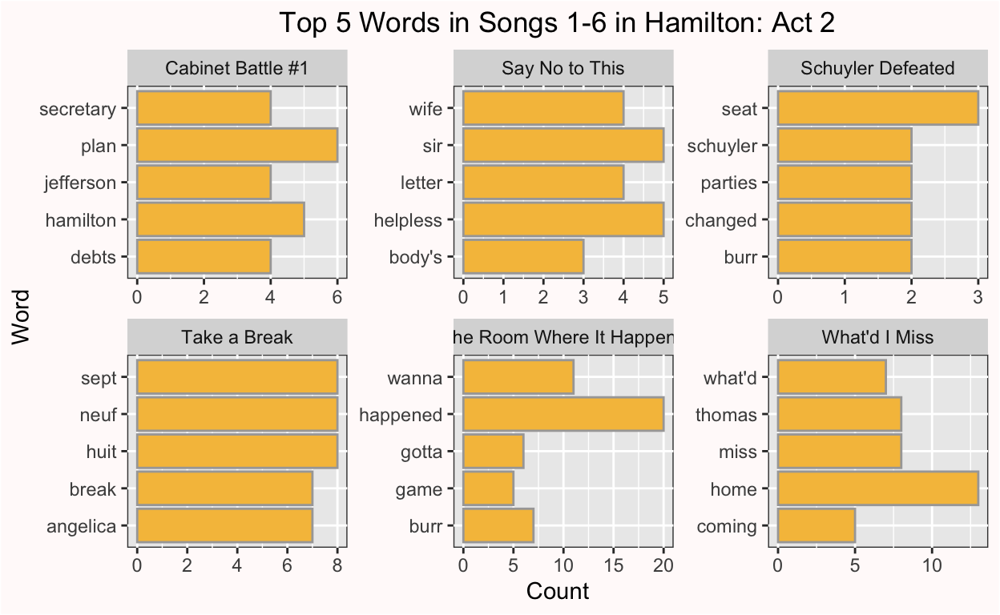
Figure 5. Top 5 Words in Songs 1-6 in Hamilton: Act 2. Between these 6 songs, the most frequently used word (“happened”) was counted 20 times in the song The Room Where It Happens, featuring Burr, Hamilton, Jefferson, Madison, and Company.
act2_7_12 <- act2_top5_words %>%
filter(song %in% c("7", "8", "9", "10", "11", "12")) # filter for songs 6-12
ggplot(data = act2_7_12, # specify data
aes(x = n, y = word)) + # define parameters
geom_col(fill = "#f6c049", color = "#a8a7a7") + # define column graph and change colors# hide legend
facet_wrap(~song_name, scales = "free") + # separate by song
labs(title = "Top 5 Words in Songs 7-12 in Hamilton: Act 2", # add title
x = "Count", # change x-axis label
y = "Word") + # change y-axis label
theme(plot.title = element_text(hjust = 0.5), # center title
panel.background = element_rect(color = "#404040"), # outline panel
plot.background = element_rect(fill = "snow")) # change plot color
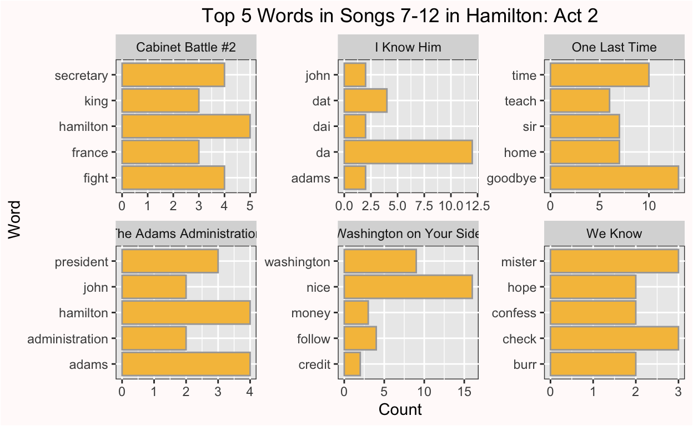
Figure 6. Top 5 Words in Songs 7-12 in Hamilton: Act 2. Between these 6 songs, the most frequently used word (“nice”) was counted 16 times in the song Washington on Your Side, featuring Burr, Jefferson, Madison, and Company.
act2_13_18 <- act2_top5_words %>%
filter(song %in% c("13", "14", "15", "16", "17", "18")) # filter for songs 13-18
ggplot(data = act2_13_18, # specify data
aes(x = n, y = word)) + # define parameters
geom_col(fill = "#f6c049", color = "#a8a7a7") + # define column graph and change colors
facet_wrap(~song_name, scales = "free") + # separate by song
labs(title = "Top 5 Words in Songs 13-18 in Hamilton: Act 2", # add title
x = "Count", # change x-axis label
y = "Word") + # change y-axis label
theme(plot.title = element_text(hjust = 0.5), # center title
panel.background = element_rect(color = "#404040"), # outline panel
plot.background = element_rect(fill = "snow")) # change plot color
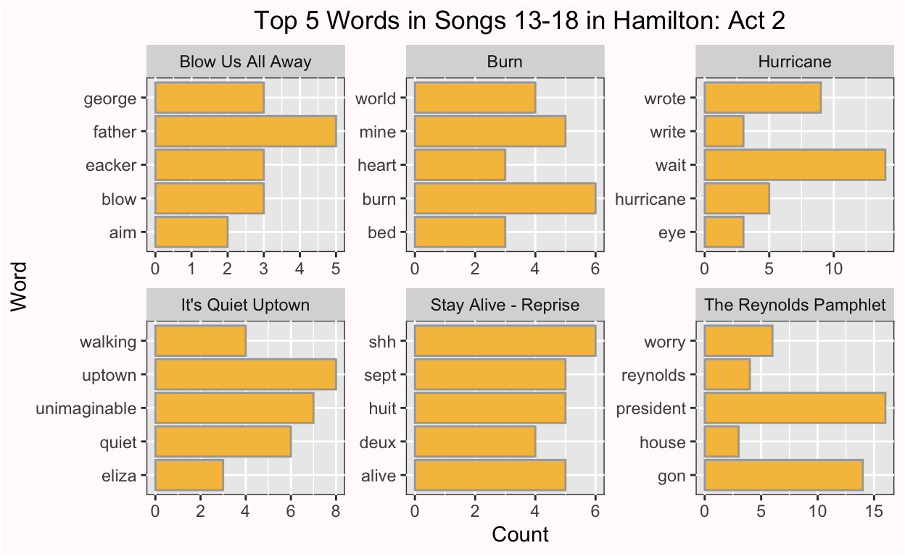
Figure 7. Top 5 Words in Songs 13-18 in Hamilton: Act 2. Between these 6 songs, the most frequently used word (“president”) was counted 16 times in the song The Reynolds Pamphlet, featuring Jefferson, Madison, Burr, Hamilton, Angelica, James Reynolds, and Company.
act2_19_23 <- act2_top5_words %>%
filter(song %in% c("19", "20", "21", "22", "23")) # filter for songs 19-23
ggplot(data = act2_19_23, # specify data
aes(x = n, y = word)) + # define parameters
geom_col(fill = "#f6c049", color = "#a8a7a7") + #define column graph and change color
facet_wrap(~song_name, scales = "free") + # separate by song
labs(title = "Top 5 Words in Songs 19-23 in Hamilton: Act 2", # add title
x = "Count", # change x-axis label
y = "Word") + # change y-axis label
theme(plot.title = element_text(hjust = 0.5), # center title
panel.background = element_rect(color = "#404040"), # outline panel
plot.background = element_rect(fill = "snow")) # change plot color
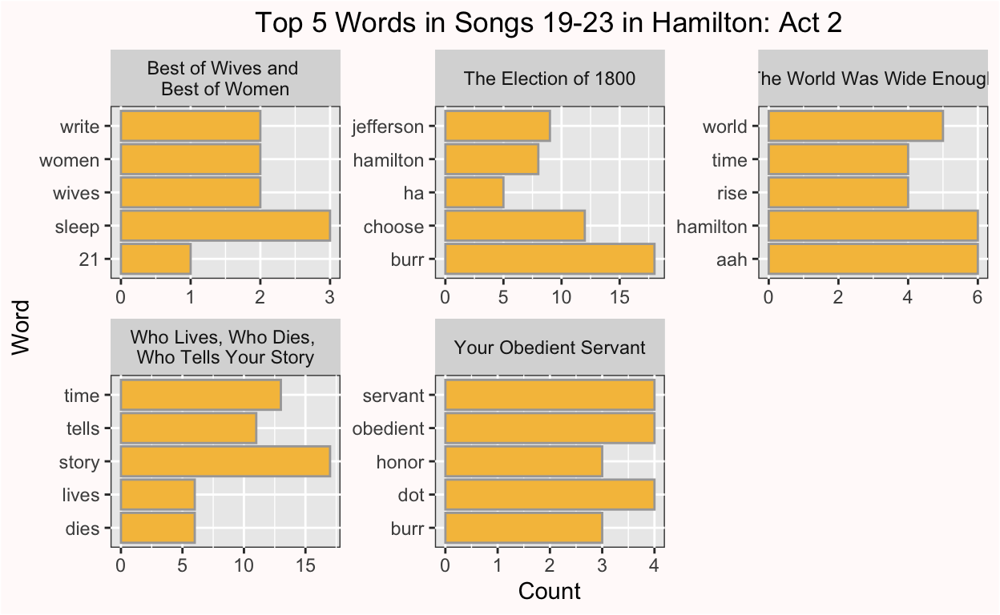
Figure 8. Top 5 Words in Songs 19-23 in Hamilton: Act 2. Between these 5 songs, the most frequently used word (“burr”) was counted 18 times in the song The Election of 1800, featuring Jefferson, Madison, Burr, Hamilton, and Company.
ggplot(data = act1_top100, # specify data
aes(label = word)) +
geom_text_wordcloud(aes(color = n, size = n), # define color and size
shape = "pentagon", # change word cloud shape
eccentricity = 0.4) +
scale_size_area(max_size = 9) + # change size of word cloud
scale_color_gradientn(colors = c("darkgreen", "blue", "purple")) + # change colors
theme_minimal() + # theme minimal
labs(title = "Word Cloud of Top 100 Words From Hamilton: Act 1") # add a title
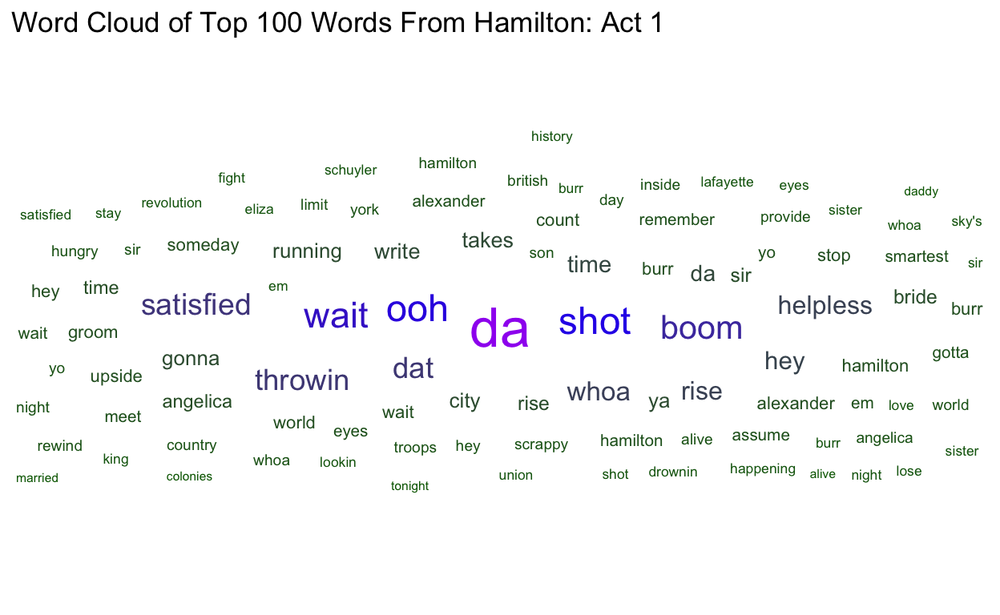
Figure 9. Word Cloud of Top 100 Words From Hamilton: Act 1. Between all the songs in Act 1, the most frequently used word (“da”) was counted 76 times in the song You’ll Be Back, featuring King George III and Company.
ggplot(data = act2_top100, # specify data
aes(label = word)) +
geom_text_wordcloud(aes(color = n, size = n), # define color and size
shape = "pentagon") + # change word cloud shape
scale_color_gradientn(colors = c("darkgreen", "blue", "purple")) + # change colors
scale_size_area(max_size = 6) + # change size of word cloud
theme_minimal() + # minimal theme
labs(title = "Word Cloud of Top 100 Words From Hamilton: Act 2") # add a title
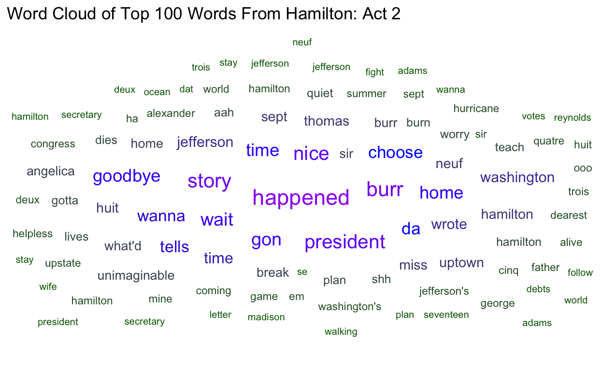
Figure 10. Word Cloud of Top 100 Words From Hamilton: Act 2. Between all the songs in Act 2, the most frequently used word (“happened”) was counted 20 times in the song The Room Where It Happens, featuring Burr, Hamilton, Jefferson, Madison, and Company.
act1_afinn <- words_act1_clean %>%
inner_join(get_sentiments("afinn"), by = "word") # get sentiments in act 1
act1_afinn_means <- act1_afinn %>%
group_by(song, song_name) %>%
summarize(mean_afinn = mean(value)) # find mean sentiment value per song
ggplot(data = act1_afinn_means, # specify data
aes(x = fct_rev(factor(song_name)), y = mean_afinn)) + # define parameters
geom_col(fill = "#f6c049", color = "#a8a7a7") + # define column graph and change colors
coord_flip() + # flip coordinates
labs(title = "Mean Afinn Sentiment Scores by Song in Hamilton: Act 1", # add title
x = "Song", # add x-axis label
y = "Mean Afinn Score") + # add y-axis label
theme(plot.title = element_text(hjust = 0.5), # center title
panel.background = element_rect(color = "#404040"), # outline panel
plot.background = element_rect(fill = "snow")) # color plot background
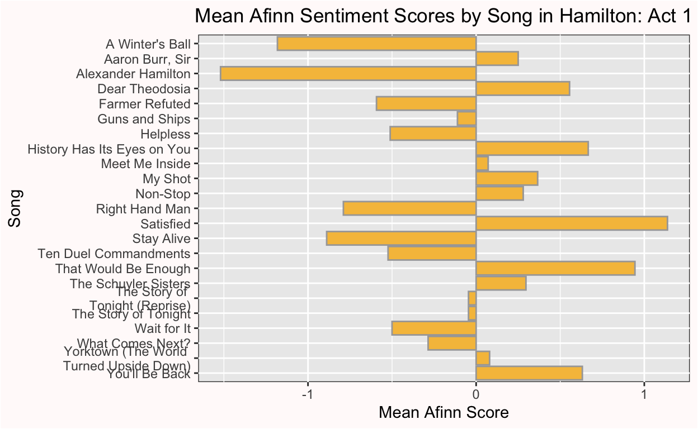
Figure 11. Mean Afinn Sentiment Scores by Song in Hamilton: Act 1. Overall, the song with the lowest Afinn score is Alexander Hamilton; the song with the higest is Satisfied.
act2_afinn <- words_act2_clean %>%
inner_join(get_sentiments("afinn"), by = "word") # get sentiments for act
act2_afinn_means <- act2_afinn %>%
group_by(song, song_name) %>%
summarize(mean_afinn = mean(value)) # find mean sentiment values for Act 2
ggplot(data = act2_afinn_means, # specify data
aes(x = fct_rev(factor(song_name)), y = mean_afinn)) + # define parameters
geom_col(fill = "#f6c049", color = "#a8a7a7") + # define column graph and change colors
coord_flip() + # flip coordinates
labs(title = "Mean Afinn Sentiment Scores in Hamilton: Act 2", # add title
x = "Mean Afinn Score", # add x-axis label
y = "Song") + # add y-axis label
theme(plot.title = element_text(hjust = 0.5), # center title
panel.background = element_rect(color = "#404040"), # outline panel
plot.background = element_rect(fill = "snow")) # color plot background
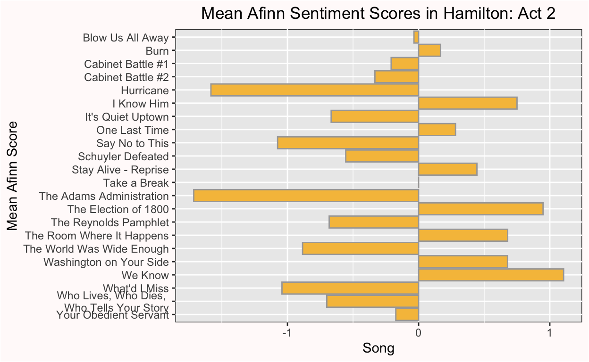
Figure 12. Mean Afinn Sentiment Scores by Song in Hamilton: Act 2. Overall, the song with the lowest Afinn score is The Adams Administration; the song with the highest is We Know.
act1_nrc <- words_act1_clean %>%
inner_join(get_sentiments("nrc")) # find nrc sentiments
act1_nrc_1_6 <- act1_nrc %>%
count(song, song_name, sentiment) %>%
filter(song %in% c("1", "2", "3", "4", "5", "6")) # select songs 1-6
ggplot(data = act1_nrc_1_6, #specify data
aes(x = sentiment, y = n)) + # define parameters
geom_col(fill = "#f6c049", color = "#a8a7a7") + # define column graph and change colors
coord_flip() + # flip axes
facet_wrap(~song_name) + # separate by song
labs(title = "NRC Sentiments in Songs 1-6 in Hamilton: Act 1", # add title
x = "Word Count", # add x-axis label
y = "Sentiment") + # add y-axis label
theme(plot.title = element_text(hjust = 0.5), # center title
panel.background = element_rect(color = "#404040"), # outline panel
plot.background = element_rect(fill = "snow")) # color plot background
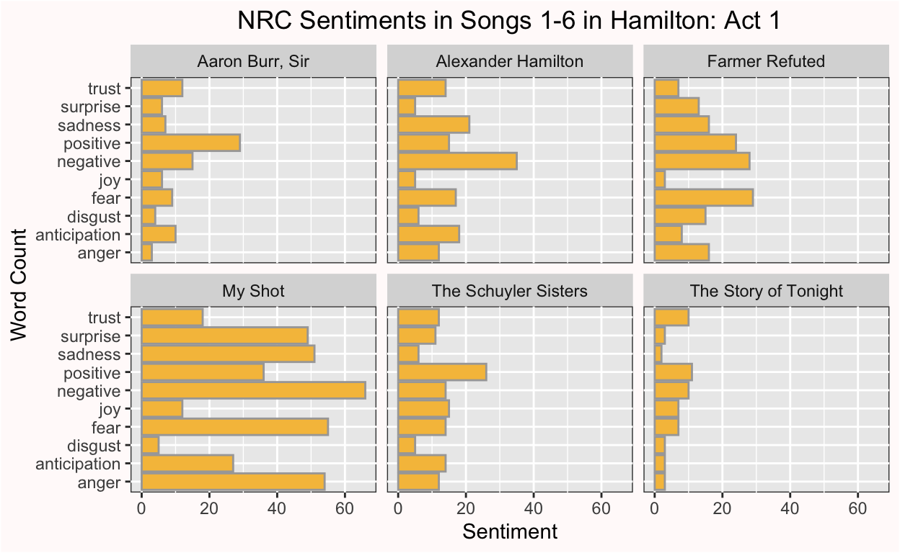
Figure 13. NRC Sentiments of Songs 1-6 in Hamilton: Act 1. Of these 6 songs, My Shot has the most amount of sentimental words, while The Story of Tonight has few.
act1_nrc_7_12 <- act1_nrc %>%
count(song, song_name, sentiment) %>%
filter(song %in% c("7", "8", "9", "10", "11", "12")) # choose songs 7-12
ggplot(data = act1_nrc_7_12,
aes(x = sentiment, y = n)) +
geom_col(fill = "#f6c049", color = "#a8a7a7") + # define column graph and change colors
coord_flip() + # flip axes
facet_wrap(~song_name) + # separate by song
labs(title = "NRC Sentiments in Songs 7-12 in Hamilton: Act 1", # add title
x = "Word Count", # add x-axis label
y = "Sentiment") + # add y-axis label
theme(plot.title = element_text(hjust = 0.5), # center title
panel.background = element_rect(color = "#404040"), # outline panel
plot.background = element_rect(fill = "snow")) # color plot background
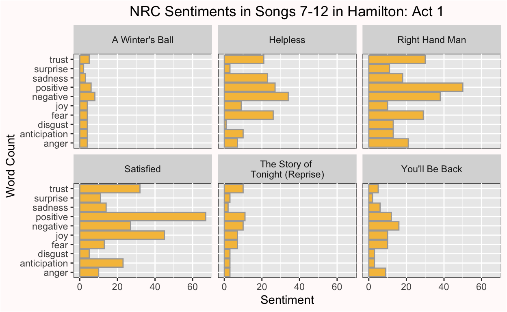
Figure 14. NRC Sentiments in Songs 7-12 in Hamilton: Act 1. Of these 6 songs, Satisfied and Right Hand Man has the most amount of positive sentimental words. The Story of Tonight (Reprise) has few sentimental words.
act1_nrc_13_18 <- act1_nrc %>%
count(song, song_name, sentiment) %>%
filter(song %in% c("13", "14", "15", "16", "17", "18")) # choose songs 13-18
ggplot(data = act1_nrc_13_18, # specify data
aes(x = sentiment, y = n)) + # define parameters
geom_col(fill = "#f6c049", color = "#a8a7a7") + # define column graph and change colors
coord_flip() + # flip axes
facet_wrap(~song_name) + # separate by song
labs(title = "NRC Sentiments in Songs 13-18 in Hamilton: Act 1", # add title
x = "Word Count", # add x-axis label
y = "Sentiment") + # add y-axis label
theme(plot.title = element_text(hjust = 0.5), # center title
panel.background = element_rect(color = "#404040"), # outline panel
plot.background = element_rect(fill = "snow")) # color plot background
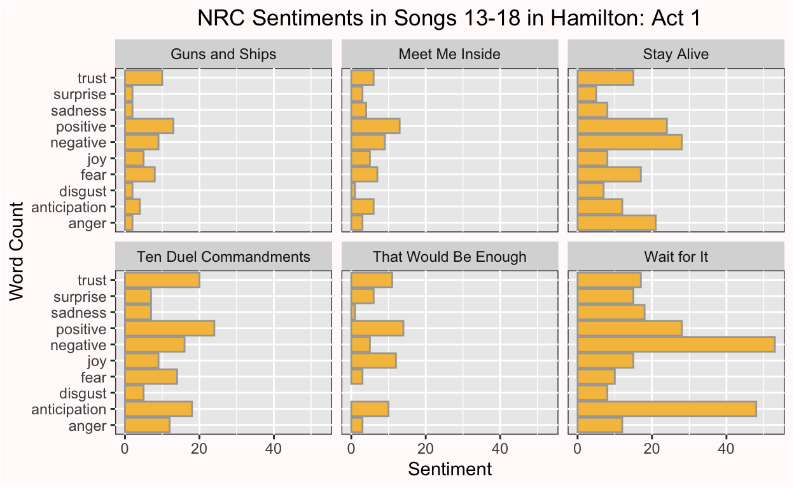
Figure 15. NRC Sentiments in Songs 13-18 in Hamilton: Act 1. Of these 6 songs, Wait for It has the most amount of negative sentimental words. The other 5 songs do not lean too heavily on any of the sentiments.
act1_nrc_19_23 <- act1_nrc %>%
count(song, song_name, sentiment) %>%
filter(song %in% c("19", "20", "21", "22", "23")) # choose songs 19-23
ggplot(data = act1_nrc_19_23, # specify data
aes(x = sentiment, y = n)) + # define parameters
geom_col(fill = "#f6c049", color = "#a8a7a7") + # define column graph and change colors
coord_flip() + # flip axes
facet_wrap(~song_name) + # separate by song
labs(title = "NRC Sentimens in Songs 19-23 in Hamilton: Act 1", # add title
x = "Word Count", # add x-axis label
y = "Sentiment") + # add y-axis label
theme(plot.title = element_text(hjust = 0.5), # center title
panel.background = element_rect(color = "#404040"), # outline panel
plot.background = element_rect(fill = "snow")) # color plot background
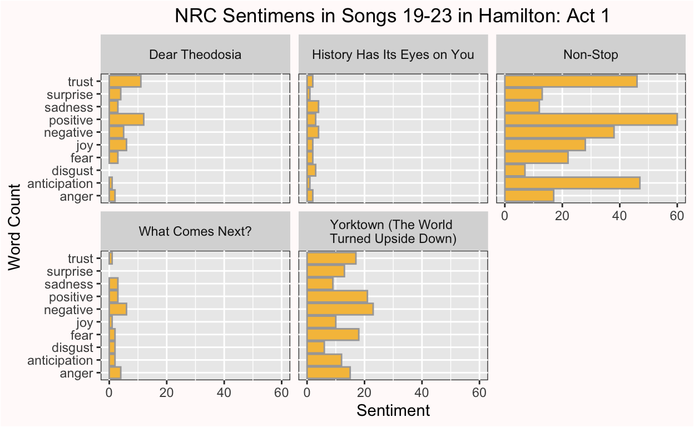
Figure 16. NRC Sentiments in Songs 19-23 in Hamilton: Act 1. Of these 5 songs, Non-Stop has the most amount of words that fall in these sentiment categories. History Has Its Eyes On You and What Comes Next? is very neutral in word sentiment content.
act2_nrc <- words_act2_clean %>%
inner_join(get_sentiments("nrc")) # find nrc sentiments
act2_nrc_1_6 <- act2_nrc %>%
count(song, song_name, sentiment) %>%
filter(song %in% c("1", "2", "3", "4", "5", "6")) # choose songs 1-6
ggplot(data = act2_nrc_1_6, # specify data
aes(x = sentiment, y = n)) + # define parameters
geom_col(fill = "#f6c049", color = "#a8a7a7") + # define column graph and change colors
coord_flip() + # flip axes
facet_wrap(~song_name) + # separate by song
labs(title = "NRC Sentiments in Songs 1-6 in Hamilton: Act 2", # add title
x = "Word Count", # add x-axis label
y = "Sentiment") + # add y-axis label
theme(plot.title = element_text(hjust = 0.5), # center title
panel.background = element_rect(color = "#404040"), # outline panel
plot.background = element_rect(fill = "snow")) # color plot background
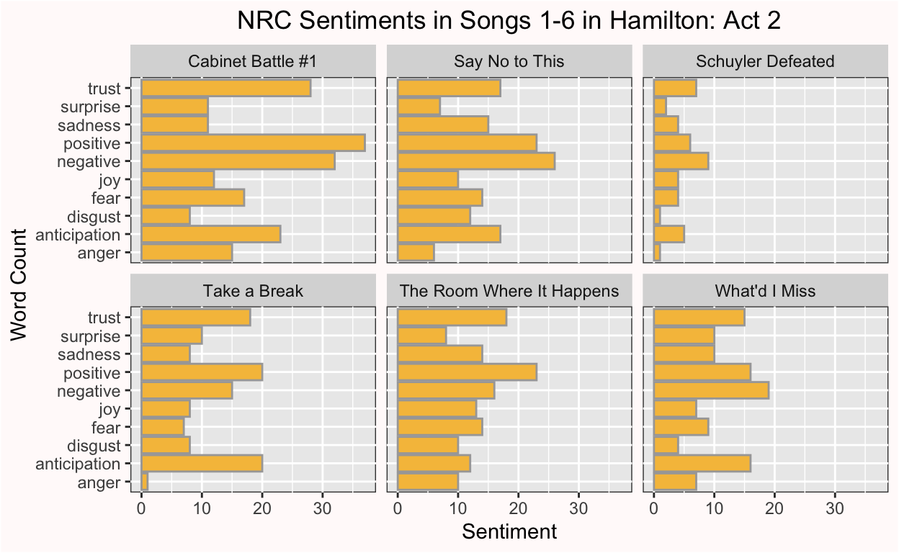
Figure 17. NRC Sentiments in Songs 1-6 in Hamilton: Act 2. Of these 6 songs, most have high sentiment word content. Schuyler Defeated appears to have a lack of words that fall in any of these sentiment categories.
act2_nrc_7_12 <- act2_nrc %>%
count(song, song_name, sentiment) %>%
filter(song %in% c("7", "8", "9", "10", "11", "12")) # choose songs 7-12
ggplot(data = act2_nrc_7_12,
aes(x = sentiment, y = n)) +
geom_col(fill = "#f6c049", color = "#a8a7a7") + # define column graph and change colors
coord_flip() + # flip axes
facet_wrap(~song_name) + # separate by song
labs(title = "NRC Sentiments in Songs 7-12 in Hamilton: Act 2", # add title
x = "Word Count", # add x-axis label
y = "Sentiment") + # add y-axis label
theme(plot.title = element_text(hjust = 0.5), # center title
panel.background = element_rect(color = "#404040"), # outline panel
plot.background = element_rect(fill = "snow")) # color plot background
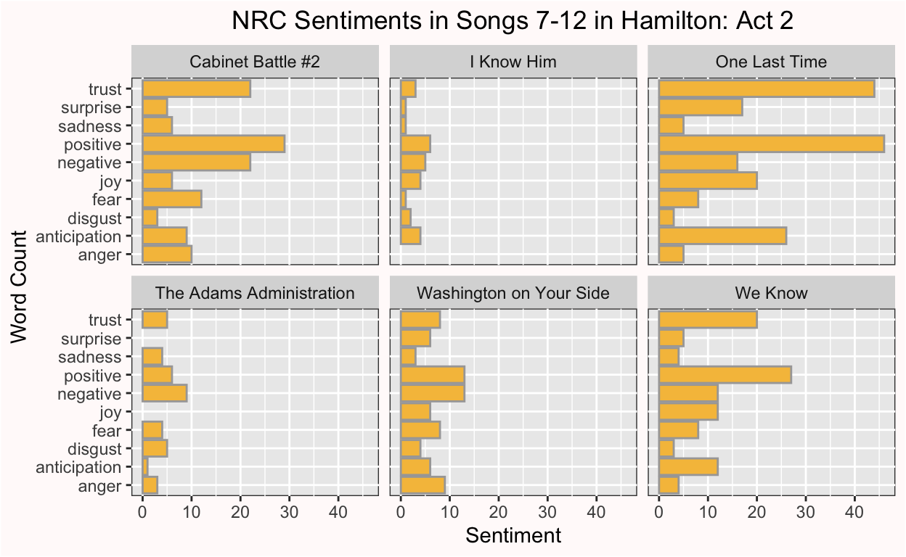
Figure 18. NRC Sentiments in Songs 7-12 in Hamilton: Act 2. Of these 6 songs, One Last Time has the most number of words in the good sentiments. The songs I Know Him, Washington on Your Side, and The Adams Administration appear to be neutral amongst all the entiment columns.
act2_nrc_13_18 <- act2_nrc %>%
count(song, song_name, sentiment) %>%
filter(song %in% c("13", "14", "15", "16", "17", "18")) # choose songs 13-18
ggplot(data = act2_nrc_13_18, # specify data
aes(x = sentiment, y = n)) + # define parameters
geom_col(fill = "#f6c049", color = "#a8a7a7") + # define column graph and change colors
coord_flip() + # flip axes
facet_wrap(~song_name) + # separate by song
labs(title = "NRC Sentiments in Songs 13-18 in Hamilton: Act 2", # add title
x = "Word Count", # add x-axis label
y = "Sentiment") + # add y-axis label
theme(plot.title = element_text(hjust = 0.5), # center title
panel.background = element_rect(color = "#404040"), # outline panel
plot.background = element_rect(fill = "snow")) # color plot background
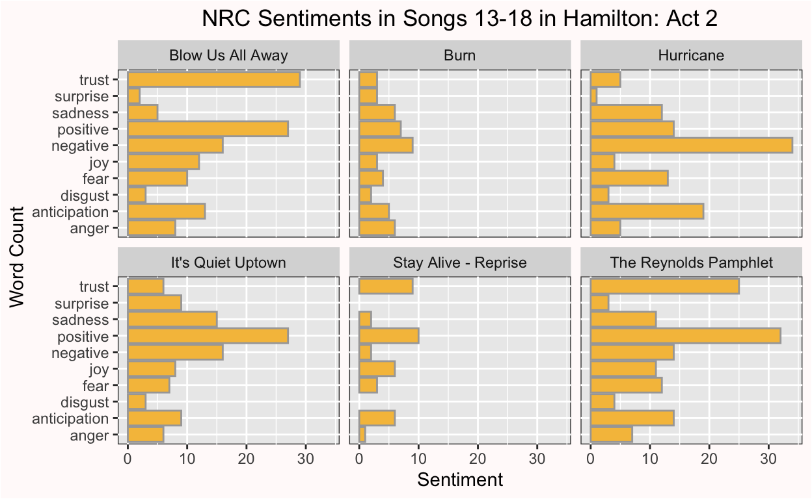
Figure 19. NRC Sentiments in Songs 13-18 in Hamilton: Act 2. Of these 6 songs, Hurricane had the highest word count for the negative sentiment. The songs Blow Us All Away, It’s Quiet Uptown, and The Reynolds Pamphlet each appear to have large word counts in the positive sentiment, as well as high counts in other sentiments as well.
act2_nrc_19_23 <- act2_nrc %>%
count(song, song_name, sentiment) %>%
filter(song %in% c("19", "20", "21", "22", "23")) # choose songs 19-23
ggplot(data = act2_nrc_19_23, # specify data
aes(x = sentiment, y = n)) + # define parameters
geom_col(fill = "#f6c049", color = "#a8a7a7") + # define column graph and change colors
coord_flip() + # flip axes
facet_wrap(~song_name) + # separate by song
labs(title = "NRC Sentiments in Songs 19-23 in Hamilton: Act 2", # add title
x = "Word Count", # add x-axis label
y = "Sentiment") + # add y-axis label
theme(plot.title = element_text(hjust = 0.5), # center title
panel.background = element_rect(color = "#404040"), # outline panel
plot.background = element_rect(fill = "snow")) # color plot background
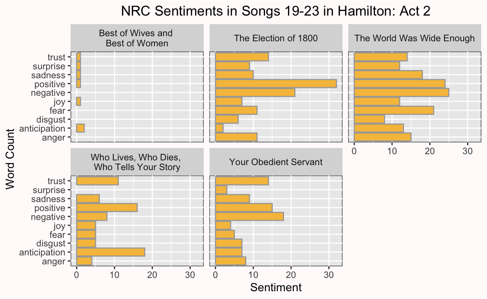
Figure 20. NRC Sentiments in Songs 19-23 in Hamilton: Act 2. Of these 5 songs, 4 of the 5 have no specific sentiments that are easily noticed. The Election of 1800 appears to have the largest word count in the positive sentiment category in comparison to the other 4 songs.
While these analyses do a good job at determining opinions, emotions, and attitudes in the text, there are limitation to these methods. The largest one is the lack of context the computer program has when looking at each of these different songs word-by-word. Some of the songs presented were given very positive sentimental ratings based on word content, when in fact, the usage of the words contradicted this analysis. It is likely that this type of analysis would likely work better with interpreting more formal types of writing than something that is much harder to understand without context.
Miranda, L. (2016). Hamilton: an American musical. In J. McCarter (Ed.), Hamilton: the revolution (pp. 23-26). Grand Central Publishing.